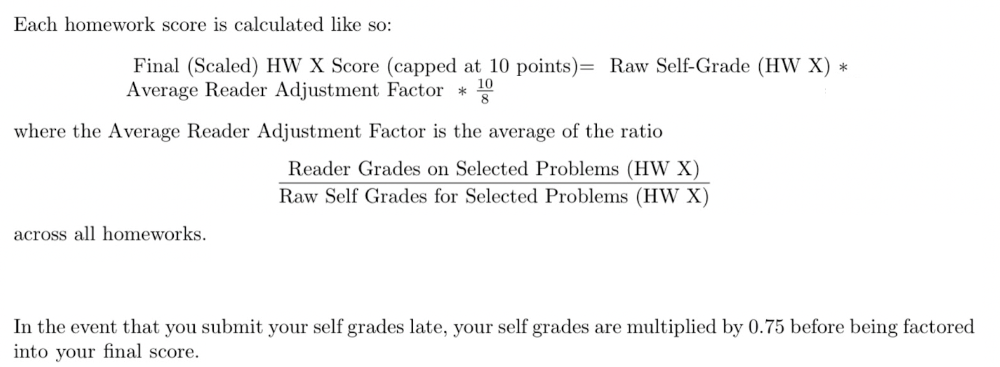

EECS16A, Designing Information Devices and Systems I
Summer 2024
Policies
Course Info
EECS 16A is an introductory-level course that introduces students to the systems side of EECS. It emphasizes systems that interact with the world from an informational point of view. Design-oriented modeling and analysis is an important theme throughout this course, and we anticipate that you’ll learn many mathematical concepts and tools and techniques along the way. These are rooted in a broad spectrum of applications, including many outside the traditional boundaries of EECS.
A successful engineer is able to cut through clutter and identify the important, relevant structure in a complex system. EECS 16A focuses on modeling as abstraction. It introduces the basics of linear modeling, largely from a deterministic point of view. It also explores linear dynamic systems and signal processing principles.
Subsequent courses, such as CS 70, introduce additional discrete structures for modeling problems; deepen your fluency with proof techniques; and introduce the analysis of random phenomena through the framework of probability theory.
EECS 16A delves into the applications of linear algebra, exploring its impact on fields such as imaging, signals and systems, machine learning, and other modern areas. We begin with the foundational principles of matrix analysis, emphasizing a perspective that extends beyond mere computation as we adopt linear-algebraic tools to understand and solve problems encountered in the real world. The concepts in EECS 16A should help you form a solid conceptual framework and equip you to explore more advanced subjects.
All information regarding policies for the course are on this page as well as on posts on Ed. We also have two special email addresses for various purposes. Where applicable, please use these addresses so that all relevant course staff can view the message. You should post your technical or content-related questions on Ed, and direct private/personal questions to the relevant email address(es) below! Please study this entire policies page before contacting the course staff.
- eecs16a.lab@ : for any lab-related questions or concerns.
- eecs16a@ : for anything else (including exam-related/administrative questions or concerns).
Please add berkeley.edu to the end of the email addresses above!
Grade Breakdown
Our objective is to help you cultivate the traits and skills of a successful engineer. We know that your grades are important to you, and we take them quite seriously.
But please stay cognizant of the fact that grades are not everything. The various components of the course—homework, discussions, labs, and exams—are designed explicitly with this in mind. Every challenge is a growth opportunity. You’ll have plenty of opportunities—through your homework, labs, exams, discussions on Ed, other interactions with your peers and with the teaching staff to demonstrate your skills set and fluency with the subject matter.
We encourage you to collaborate when appropriate, and to teach each other the new ideas and concepts that you learn, as you go through the course. To teach the material is one of the best ways to learn. Accordingly, discussing course material with peers in the class is a win-win situation for everyone. Notwithstanding a holistic view, which we want you to adopt of grades, here’s a table that breaks down the various components of the course, and their corresponding weights in determining your final course grade.
| Category | Points |
|---|---|
| Discussion Participation | 25 points |
| Homework | 50 points |
| Labs | 45 points |
| Midterm 1 | 50 points |
| Midterm 2 | 50 points |
| Final | 80 points |
We know that your grade is important to you, and we take it seriously. Roughly speaking, if you’re in the top 3/4 of your cohorts’ performance level this semester, you can count on a B- or above. If you are in the top 1/3 of your cohorts’ performance level, you can count on an A- or above.
Exam Clobber Policy
This course spans a broad set of ideas and concepts within a short period of time. Accordingly, it’s critical that you take ownership of, and invest in, your learning, and maintain a sustained, consistent, and efficient effort to succeed. The most common signature of previous students who struggled with, and even failed, this course was that they engaged with the course a bare minimum in most weeks, and then made a fruitless effort to “cram” before exams. This is not a formula for success.
To give students a ‘second chance’, we provide you with the opportunity to clobber a midterm. To take advantage of this opportunity, you must redo the midterm that is to be clobbered. Without the midterm redo submitted by the deadline that the teaching staff will announce, you will not qualify for the clobber.
Midterm 1 can only be clobbered by Midterm 2. And Midterm 2 can only be clobbered by Midterm 3. There is no clobber for Midterm 3.
For each midterm, if you complete the midterm redo, we will replace your previous midterm score with 85% of your immediately subsequent exam score if it would help your grade. We will use the following formula:
clobbered midterm score = max(original midterm score, 0.85*z-score on subsequent exam + mean of original midterm.
So, if you receive a MT2 score that is 1.5 σ_2 above the mean of MT2, you’ll get—as your clobber score for MT1—0.85*1.5 σ_1 above the mean of MT1. Here, σ_1 and σ_2 denote the standard deviations of MT1 and MT2, respectively.
Homework (HW) Party and Office Hours (OH)
Homework parties are your chance to meet and interact with other students, while also having the chance to get help from GSIs, tutors, and faculty. We expect students to treat each other with respect during homework parties as well as during all other parts of the class, including interactions on Ed, discussion, and office hours. Remember that each of you is coming into a class with different experiences and backgrounds -- use this as an opportunity to learn from one another.
As annotated on the course Google calendar, office hours will be held Tuesday 2-4 PM . You can come to office hours with your study groups, or by yourself -- there will be one or more TAs there to help you work through the concepts or the homework!
Homework parties will be held on Thursday 5-6:30 PM and Friday 2-5 PM. Homework party is similar to office hours, but with more staff available and students are expected to help each other out, and if desired, form ad-hoc "pickup" homework groups in the style of a pickup basketball game.
Instructor office hours are Thursdays 1:30-3:00 PM on zoom , the link can be found on the calendar event.
All office hours and homework parties will be held in-person in Cory 144MA. We encourage you to attend office hours and homework parties—this is a fantastic way for you to find a study group!
Please note that all course-related questions are welcome at both homework parties and office hours!
Homework and Self-Grade Submission
To receive any credit for homework, you must follow all of the below steps.
- Do the homework.
- Submit the homework by Friday night at 11:59 PM Pacific Time. We will accept submissions for full credit as long as your submission makes it into Gradescope before the late deadline of 12:00 AM. Submissions on or after 12:00 AM will not be accepted.
- Read the solutions. Official solutions will be released after the homework submission deadline.
- Do the self-grade. Grade your submitted work accordingly for every part of every problem in the homework on a simple coarse scale as described in the table below. Enter your self-grades into the posted self-grade form for that homework, which will generate a .txt file, and upload that .txt file to the appropriate self-grade assignment on Gradescope.
Score Reason 0 Didn't attempt or very wrong 2 Got started and made some progress, but went off in the wrong direction or with no clear direction 5 Right direction and got half-way there 8 Mostly right but a minor thing missing or wrong 10 100% correct - Note: You must justify self-grades of 2, 5 or 8 with a comment. Grades of 0 and 10 do not need to be justified (you can just write "Incorrect" or "Correct"). If you are really confused about how to grade a particular problem, you should post on Ed. This is not supposed to be a stressful process. Just like we encourage you to use a study group for doing your homework, we strongly encourage you to have others help you in grading your assignments while you help grade theirs.
- Submit the self-grade by the Monday night following the homework deadline at 11:59 PM Pacific Time. We will accept late self-grades up to a week after the original homework deadline for 75% credit on the associated homework assignment. If you don't enter a proper self-grade after one week, you are giving yourself a zero on that assignment.
- If you feel like your performance in the class is being impacted by a lack of inclusion, please contact the instructors, an academic advisor, or the departmental Faculty Equity Advisor (https://engineering.berkeley.edu/about/equity-and-inclusion/faculty-equity-advisers/).
- An anonymous feedback form is also available at https://engineering.berkeley.edu/about/equity-and-inclusion/feedback/.
- If you feel like your performance in the class is being impacted by your experiences outside of class (e.g., family matters, current events), please don’t hesitate to come and talk with the instructor(s) or academic advisors in Engineering Student Services. We want to be a resource for you.
- There is no tolerance for sexual harassment or violence. If your behavior harms another person in this class, you may be removed from the class or the University either temporarily or permanently.
- If you have a name and/or pronouns that differ from your legal name, designate a preferred name for use in the classroom at: https://registrar.berkeley.edu/academic-records/your-name-records-rosters.
- As a participant in this class, recognize that you can be proactive about making other students feel included and respected.
In summary, you must do the homework, turn it in on time, read the solutions, do the self-grade, and turn it in on time. Unless all of these steps are done, you will get a zero for that assignment.
Self-Grade Walkthrough
Reader Grades
Course readers are going to be grading and sending you occasional comments. Your own scores will be used in computing your final grade for the course, adjusted by taking into account reader scores so that everyone is fairly graded effectively on the same scale. For example, if we notice that you tend to give yourself 5s on questions where readers looking at your homeworks tend to give you 8s, we will apply an upward correction to adjust. Any consistent discrepancy between your self-assigned grades and the reader grades will be flagged and checked for academic dishonesty, so please grade yourself appropriately without attempting to inflate your grades. This correction factor is called the reader adjustment factor.
Each week, course readers will grade some (not necessarily strict) subset of the problems. These grades and comments serve as an opportunity to receive feedback on the work you’re submitting over the course of the semester. Reader grades will be released on Gradescope about one week after the homework deadline. Homework regrade requests are typically due on Gradescope within 72 hours of reader grades being released. If a regrade request is submitted for a part of a question on the homework, the grader reserves the right to regrade the entire homework and could potentially take points off.
Homework Effort Policy
Because the point of homework in this class is again to help you learn, not to punish you for making small mistakes, if your final score on any homework is above 8/10, your grade will automatically be bumped up to 100% (10/10). If your final score is less than 8/10, it will be scaled accordingly so that a 6/10 will result in 75% (7.5/10).
Homework Scoring
The following formula summarizes how homework scores are calculated:
We will automatically drop the 2 lowest homework scores from your final grade calculation. If you use both drops half-way into the semester, and request another, we cannot help you. EECS47D students will not have their lowest homework score dropped.
Participation in Discussion
Every week, discussion will be held on Wednesday. Timings and locations can be found on the course website. You may choose to attend any discussion section time, and are encouraged to try out different TAs’ discussion sections to find which one works best for you. Discussion sections will take place in-person.
While attendance in discussions is not mandatory, students are encouraged to participate in these sessions. Although attendance itself will not be graded, please note that borderline cases at the conclusion of the semester may benefit from demonstrated engagement in discussions.
Remember, these sessions are designed to enhance your understanding of the material and provide an opportunity for valuable interaction with your peers and TAs. A big part of your learning will be done in this interactive, classroom setting.
Discussion sections are a great way to apply concepts taught in lecture to practice problems, interact with enthusiastic and dedicated TAs, and collaborate with peers in a smaller group setting. It’s a great way to meet other students in the course, and we notice that students who regularly attend discussions find the homeworks and exams more easy and manageable.
Lab Policies
Labs this semester will be held in-person, except where otherwise stated on Ed. Labs for this class are not open section, you must go to your assigned lab section.
Credit for each lab is based on completion and checkoff with a member of lab staff during your assigned lab section. In a checkoff, you will demonstrate your work from portions of the lab and answer conceptual questions related to the lab. You should aim to get checked off by the end of your lab section. If (and only if) you attend your lab section for the whole duration but do not finish in time, you may get checked off at the beginning of your next lab section before starting the following lab. We have the following grading policy for labs: If you complete all the labs, you will receive full lab credit. We will drop your lowest lab score from your final grade calculation. If you miss two labs, you will lose half of your lab grade. If you miss three or more labs, you will receive an F in the class.
Some lab sections are “buffer labs”. These are held during a week-long period at the end of each lab module in which no new labs begin.
You may get checked off for only one missed lab per lab module by attending a buffer lab for that module. No other labs can be checked off (except for extenuating circumstances, please email our lab staff at eecs16a.lab@) . If you have already completed all labs for a particular lab module, you do not need to attend a buffer lab for that module.
Students must sign up for a buffer lab before attending. Please note that not all regularly scheduled lab sections will be run as buffer lab sections. Further details will be shared duly on Ed.
Exam Policies
There are three midterms in this course, and no final exam. The midterms will be held during the regular lecture time from 6:30 to 8 pm PT. Of the three midterms, one will be online while the other two will be held in-class in Pimentel 1.
The first midterm will be held on Wednesday February 7, 2024 [online]
The second midterm will be held on Wednesday March 20, 2024 [online or in-person tbd]
The third midterm will be held on Wednesday April 24, 2024 [online or in-person tbd]
Specific policies and logistics about the midterms will be announced closer to their dates, so please monitor Ed regularly for updates.
Makeup exams will not be scheduled. Alternate exam times will not be provided under any circumstances, except for students requiring specific DSP accommodations. Please contact us privately if you have any concerns.
Please plan for exams at these times. In case of an emergency on exam day, please email the Head GSI at eecs16a@berkeley.edu as soon as possible and provide details of the issue as well as a contact phone number. Emergency exam conflicts will be handled on a case-by-case basis. Exam conflicts originating from a lecture conflict will not be accommodated.Regrade requests are typically open soon after exam scores are released. Late regrade requests will not be considered. If a regrade request is submitted for a part of a question on the exam, the grader reserves the right to regrade the entire exam and could potentially take points off.
Academic Honesty
By default, we treat you with utmost respect and trust, and expect you to not only reciprocate but to also conduct yourselves in a manner becoming of the high standards of our UC Berkeley community.
We expect that any item you submit for evaluation reflects your original, bona fide work, and that you have neither provided to, nor received from, anyone excessive or unreasonable assistance that might constitute—to a reasonable observer—an unfair advantage for you or for any of your peers in the class.
As a member of the UC Berkeley community, you must act with honesty, integrity, respect for others, and impeccable professional responsibility—and to carry yourselves in a manner consistent with the letter and the intent of the campus Code of Student Conduct.
You must not violate—nor aid or abet anyone else to violate—our course policies, including any policy that we might convey to you as part of the various course components (such as instructions for a problem set, lab, or exam).
More generally, in the course of this semester, you must not commit any act that violates—nor aid or abet anyone else to violate—UC Berkeley, state, or Federal regulations.
In EECS 16A we will have zero-tolerance for academic misconduct. Consequences for students who violate the principles outlined above will be severe.
Exceptions
Any requests for exceptions must be submitted through this form. If you do NOT have DSP accommodations, you must consume your allotted two homework drops before you request a homework extension, or any kind of exception. . To request an exception, you must fill out the form as soon as possible, as retroactive exceptions will likely be denied.
We’ll handle exceptions on a case-by-case basis. Examples of situations that merit an exception include, but are not limited to, medical or family emergencies. The deadline to request an exception is immediately before the start time of the last exam. However, the sooner you let us know, the better.
Accommodations will be provided to students who have letters of accommodations from the DSP Office.
If you face extreme hardship, please email us at eecs16a@berkeley.edu as early as you can. The sooner you alert us that you face an intractable or otherwise overwhelming challenge, the likelier we are to be able to assist you.
Course Communication
The instructors and TAs will post announcements, clarifications, corrections, etc. on Ed. So, you must check the EECS16A Ed page frequently throughout the term. (You should already have access to the EECS16A Spring 2024 Ed. If you do not, please let us know.)
If you have a question, your best option is to post a message on Ed. The staff (instructors and TAs) will check Ed regularly, and if you use Ed, other students will be able to help you too. When using Ed, please avoid off-topic discussions, and please do not post answers to homework questions before the homework is due. Also, always look for an appropriate category to post the question to (for example, each homework will have its own category, so please post there). That will ensure you get the answer faster.
If your question is personal or not of interest to other students, we encourage you to email us (see the top of this page for all the course emails) rather than making private Ed posts. If you wish to talk with one of us individually, you are welcome to come to our office hours. Please reserve email for the questions you can’t get answered in office hours, in discussion sections, or through Ed.
For any exceptions that are of a personal nature, please contact the head GSI at eecs16a@berkeley.edu. Technical and homework questions are best resolved in homework party, Ed, and during office hours.It can be challenging for the instructors to gauge how smoothly the class is going. We always welcome any feedback on what we could be doing better. If you would like to send anonymous comments or criticisms, please fill out this anonymous feedback form.
Collaboration
We encourage you to work on homework problems in study groups; however, you must always write up the solutions on your own. Similarly, you may use books or online resources to help solve homework problems, but you must always credit all such sources in your write up, and you must never copy material verbatim. Using previous EECS 16A homework, exam, and lab solutions is strictly prohibited, and will be considered academic misconduct. This is not how you want to start your career as an engineer.
We expect that most students can distinguish between helping other students and cheating. Explaining the meaning of a question, discussing a way of approaching a solution, or collaboratively exploring how to solve a problem within your group is an interaction that we strongly encourage. But you should write your homework solution strictly by yourself, and you are not allowed to give your homework to other students to copy. You should never possess a copy (written or digital) of another student’s work. You should acknowledge everyone whom you have worked with, or who has given you any significant ideas about the homework. This is good scholarly conduct.
Collaboration during exams or other designated assessments is strictly forbidden, subject to the Berkeley Honor Code, Code of Conduct, and the parameters of the specific assessment.
16A Study Group Formation
We believe that an important part of learning is learning with others; your study groups will become a crucial factor to your success in all your classes, including EECS16A. To help you find a study group, we have a course-run study group formation program and associated study groups class. The class is a 1 unit P/NP class in which students will meet weekly with their assigned study groups. We are in the process of forming this class and the class code is TBD. While participation is completely optional, we highly encourage you to work in groups. Your very first homework will have an opportunity for you to be matched into study groups based on your preferences!
Don't Be Afraid to Ask for Help
Are you struggling? Please come talk with us! The earlier we learn about your struggles, the more likely it is that we can help you. Waiting until right before an exam or the last few weeks of the semester to let us know about your problems is not an effective strategy - the later it is, the less we will be able to help you.
Even if you are convinced that you are the only person in the class who is struggling, please overcome any feelings of embarrassment or guilt, and come ask for help as soon as you need it -- we can almost guarantee you're not the only person who feels this way. Don't hesitate to ask us for help -- we really do care that you thrive! You can email eecs16a@berkeley.edu, or email / talk to any course staff at any time -- we’re happy to help.
Health
If you have COVID symptoms, please do not attend in-person activities. Instead, keep up with the class by watching the lecture recordings. We will post PDFs of each discussion worksheet on the course website, and post detailed solutions the next day, so you can follow along with discussion asynchronously. If you miss a lab section, you should try to make up the lab during buffer week. However, if you would miss multiple labs or miss the buffer section due to illness, please email eecs16a.lab@berkeley.edu, and we will do our best to accommodate you. If you have contagious symptoms or COVID please do not attend the exam in person and reach out to us well ahead of the exam time (we will handle these situations on a case-by-case basis).
If you have a medical emergency that would prevent you from keeping up with the class asynchronously or would prevent you from attending class in-person for a longer duration, please email eecs16a@berkeley.edu.
Inclusion
We are committed to creating an environment welcoming of all students where everyone can fulfill their potential for learning. To do so, we intend to support a diversity of perspectives and experiences and respect each others’ identities and backgrounds (including race/ethnicity, nationality, gender identity, socioeconomic class, sexual orientation, language, religion, ability, etc.). To help accomplish this:
Berkeley Honor Code
Everyone in this class is expected to adhere to this code: “As a member of the UC Berkeley community, I act with honesty, integrity, and respect for others.”
Accommodation policy
We honor and respect the different learning needs of our students, and are committed to ensuring you have the resources you need to succeed in our class. If you need religious or disability-related accommodations, if you have emergency medical information you wish to share with us, please share this information with us as needed. You may write to the course email address eecs16a@berkeley.edu and please also see DSP and CAPS under “Resources”.
Policy on Course Content
You are free and encouraged to use course materials for personal use (in collaborations with other students, in your research, etc.). You may NOT post HW/Exams/Solutions anywhere on the web because this could encourage cheating down the road. You are expressly prohibited from uploading course materials to websites such as coursehero.com or chegg.com, which distribute and monetize content without compensation to the University. Course material, including all video, is copyrighted and reposting to third party sites or any other form of redistribution is prohibited.
Resources
For academic performance:
The Center for Access to Engineering Excellence or CAEE (325 Davis Hall) is an inclusive center that offers study spaces, nutritious snacks, and tutoring in >50 courses for Berkeley engineers and other majors across campus. The Center also offers a wide range of professional development, leadership, and wellness programs, and loans iclickers, laptops, and professional attire for interviews. Technology Needs (STEP): Student Technology Equity Program (STEP). STEP provides need-based laptops and other technologies for free for undergraduate, graduate, and professional students at UC Berkeley.
For disability accommodations:
The Disabled Student’s Program (DSP 260 César Chávez Student Center #4250; 510-642-0518) serves students with disabilities of all kinds, including temporary disabilities. Services are individually designed and based on the specific needs of each student as identified by DSP's Specialists. If you have already been approved for accommodations through DSP, please know that DSP is ready to quickly adjust your accommodations if your situation changes.
For mental wellbeing:
Counseling and Psychological Services is available as part of University Health Services at the Tang Center (2222 Bancroft Way #4300; 510-642-9494). Services are offered at many locations, including on-site in the College of Engineering. CAPS services are available to all students, regardless of insurance, and initial visits do not cost anything. CAPS has expanded allowing students to receive help immediately with same-day counseling (510-642-9494), online resources, and a 24/7 counseling line at 855-817-5667. Short-term help is also available from the Alameda County Crisis hotline: 800-309-2131. If you, or someone you know, is experiencing an emergency that puts their health at risk, please call 911.
For recovery from sexual harassment or sexual assault:
The Care Line (PATH to Care Center) (510-643-2005) is a 24/7, confidential, free, campus-based resource for urgent support around sexual assault, sexual harassment, interpersonal violence, stalking, and invasion of sexual privacy. The Care Line will connect you with a confidential advocate for trauma-informed crisis support including time-sensitive information, securing urgent safety resources, and accompaniment to medical care or reporting.
For solving a dispute:
The Ombudsperson for Students (250 Sproul Hall; 510-642-5754) provides a confidential service for students involved in a University-related problem (academic or administrative), acting as a neutral complaint resolver and not as an advocate for any of the parties involved in a dispute. The Ombudsman can provide information on policies and procedures affecting students, facilitate students' contact with services able to assist in resolving the problem, and assist students in complaints concerning improper application of University policies or procedures. All matters referred to this office are held in strict confidence. The only exceptions, at the sole discretion of the Ombudsman, are cases where there appears to be imminent threat of serious harm.
For basic needs (food, shelter, etc):
The Basic Needs Center provides housing, food, transportation support, among other support needed to thrive at UC Berkeley. Specifically, the UC Berkeley Food Pantry (check-in at 1st floor of MLK Student Union) aims to reduce food insecurity among students, especially the lack of nutritious food. Students can visit the pantry as many times as they need and take as much as they need while being mindful that it is a shared resource. The pantry operates on a self-assessed need basis; there are no eligibility requirements. The pantry is not for students and staff who need supplemental snacking food, but rather, core food support.
Advice
The following tips are offered based on our experience.
Do the homeworks! The homework is explicitly designed to help you to learn the material as you go along. There is usually a strong correlation between homework scores and final grades in the class.
Keep up with lectures! Discussion sections, labs and homeworks all touch on portions of what we discuss in lecture. Students do much better if they stay on track with the course. That will also help you keep the pace with your homework and study group.
Take part in discussion sections! Discussion sections are not auxiliary lectures. They are an opportunity for interactive learning. The success of a discussion section depends largely on the willingness of students to participate actively in it. As with office hours, the better prepared you are for the discussion, the more you are likely to benefit from it.
Please come to office hours! We love to talk to you and do a deep dive to help you understand the material better.
Form study groups! As stated above, you are encouraged to form small groups (two to four people) to work together on homeworks and on understanding the class material on a regular basis. In addition to being fun, this can save you a lot of time by generating ideas quickly and preventing you from getting hung up on some point or other. Of course, it is your responsibility to ensure that you contribute actively to the group; passive listening will likely not help you much. And recall the caveat above that you must write up your solutions on your own. We strongly advise you to spend some time on your own thinking about each problem before you meet with your study partners; this way, you will be in a position to compare ideas with your partners, and it will get you in practice for the exams. Make sure you work through all problems yourself, and that your final write-up is your own. Some groups try to split up the problems ("you do Problem 1, I'll do Problem 2, then we'll swap notes"); not only is this a punishable violation of our collaboration policies, it also ensures you will learn a lot less from this course.